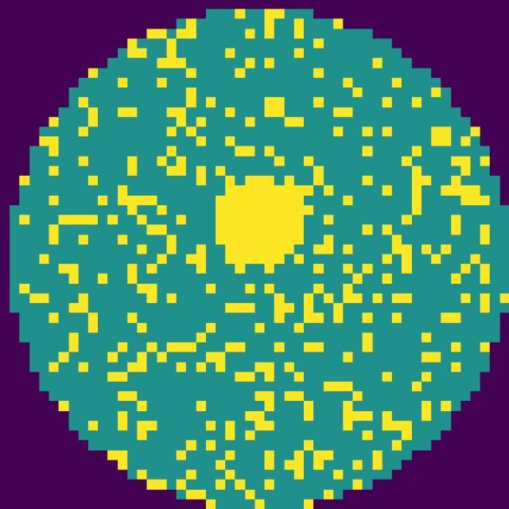
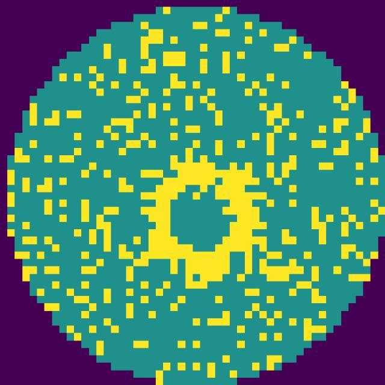
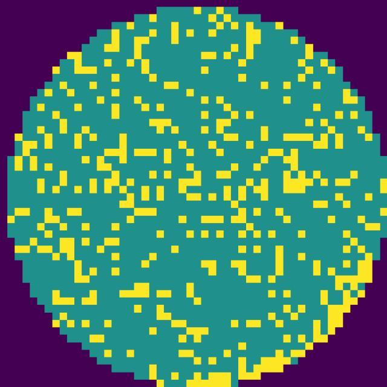
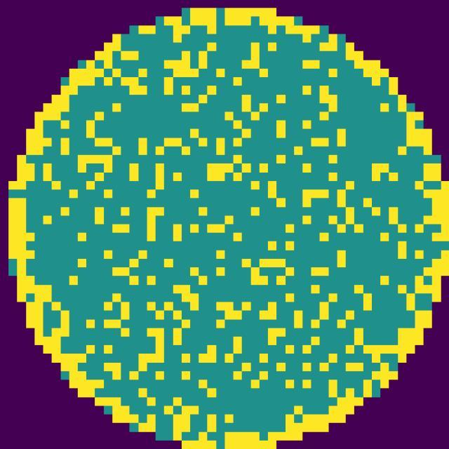
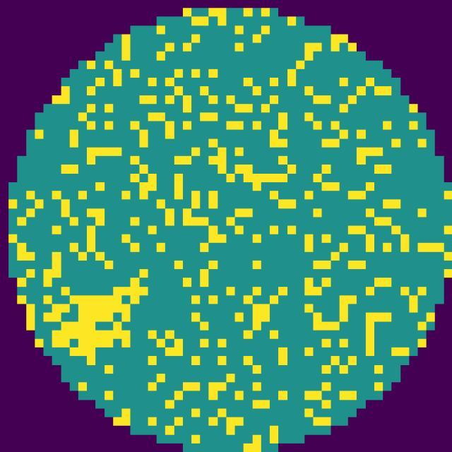
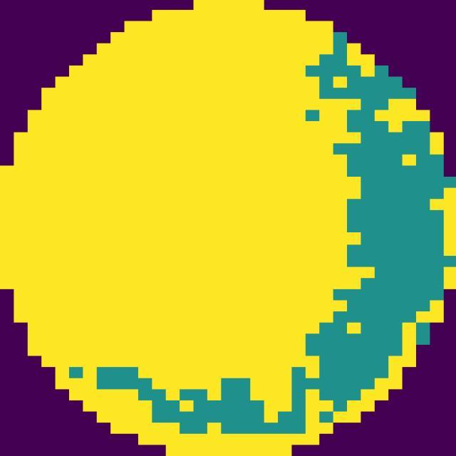
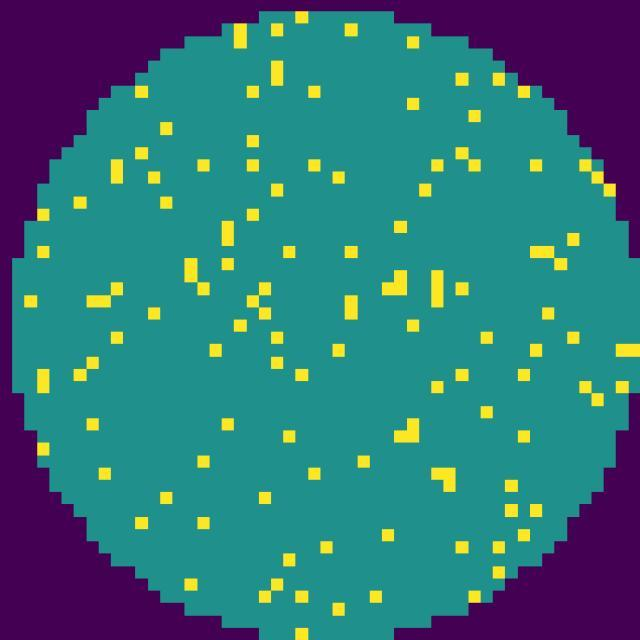
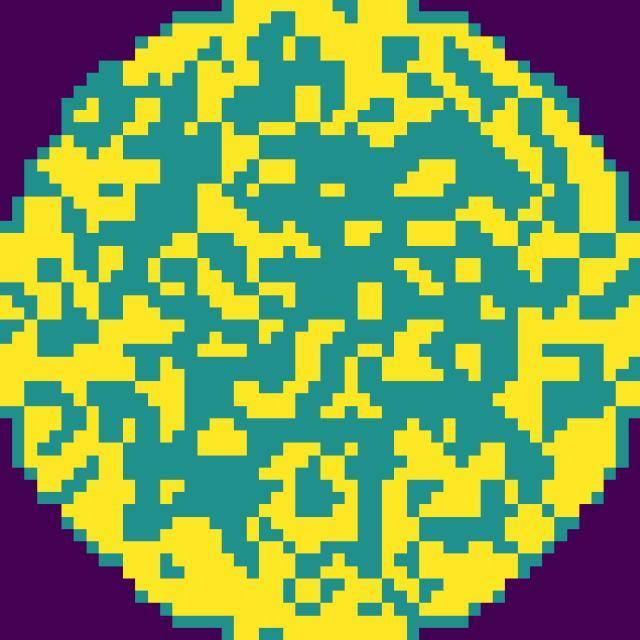
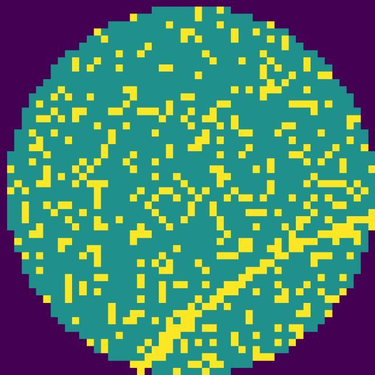

Gated Dual-Coordinate Relative Position Attention — a single-backbone Vision Transformer for semiconductor wafer defect classification, with physics-informed auxiliary heads for failure mechanism and yield loss.
A single attention backbone is augmented with two relative-position bias systems — Cartesian and polar — fused by a gate computed per query token, per attention head, per layer, instead of the usual dual-backbone late-fusion approach.
Classified from 640×640 viridis-colormapped wafer bin maps.

Center
Donut
Edge-Loc
Edge-Ring
Local
Near-Full
Normal
Random
ScratchUpload a wafer map and get the predicted defect class with a full confidence breakdown across all 9 classes.
Bounding boxes around regions where defective-die density is statistically elevated above the wafer's own background scatter.
A physics-literature-derived root-cause mapping (e.g. CMP non-uniformity, edge handling damage, mechanical scratch).
Visualizes, per patch, how much the model is relying on Cartesian vs. polar relative-position attention.